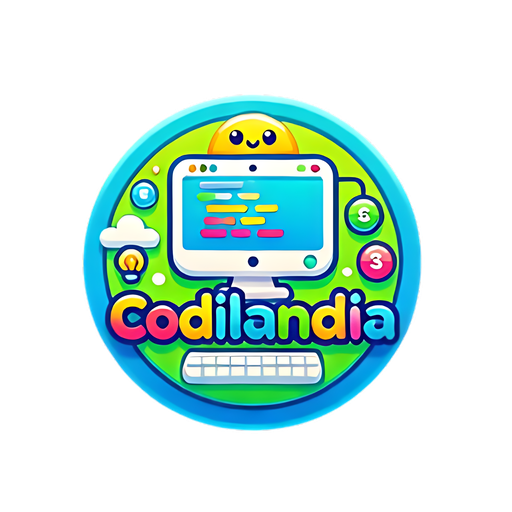

Trabajo de Fin de Grado (2025–2026)
Chatbot IA para Aragón Open Data
Sistema multiagente que convierte 50M de tripletas RDF en respuestas sin SPARQL.
Sobre mí
Ingeniería Informática, especialidad en Sistemas de la Información
Soy Irene Pascual, graduada en Ingeniería Informática por la Universidad de Zaragoza, donde cursé la especialidad de Sistemas de la Información. Lo que de verdad me apasiona son los datos, una afición que he ido descubriendo a lo largo de la carrera: asignaturas como Bases de Datos o Minería de Datos me engancharon a modelarlos, cruzarlos y sacarles conclusiones, y esa inquietud terminó de tomar forma en mi Trabajo de Fin de Grado. Con el tiempo me he dado cuenta de que un dato solo vale cuando alguien lo entiende, así que me interesa tanto el análisis en sí como saber contarlo con claridad a quien tiene que decidir con él.
Proyectos
Aquí están los proyectos con los que más he aprendido. La mayoría giran en torno a los datos, ya sea analizándolos o construyendo cosas a partir de ellos, que es lo que de verdad me interesa. Puedes abrir cualquiera para ver en qué consistió y cómo lo saqué adelante.
Trabajo de Fin de Grado (2025–2026)
Sistema multiagente que convierte 50M de tripletas RDF en respuestas sin SPARQL.
Minería de datos (2025–2026)
Data mart en estrella con ETL en KNIME y minería de datos sobre retrasos aéreos.
Power BI (2024–2025)
Estudio en Power BI del rendimiento de Japón en los Juegos Olímpicos y de en qué deportes debería invertir para liderar.
Bases de datos (2024–2025)
Diseño de dos bases de datos (cine y liga deportiva) con triggers y consultas optimizadas.
Hackathon de IA, 1er puesto (2025–2026)
Ganamos con un asistente de IA generativa para gestionar gastos de viaje de empresa.
Prácticas en empresa (2025)
Migré un sistema de métricas y de generación de RDF de PHP a TypeScript.

Proyecto en pareja (2025)
App con 11 niveles para enseñar programación en C++ a niños de primaria.
Proyecto en equipo (2025)
Plataforma de lectura de eBooks con sincronización web/móvil y comunidad de lectores.
Comercio electrónico (2025–2026)
Plataforma para digitalizar boleras: reservas, wallet de puntos y analítica web.
Experiencia & formación
Mi recorrido académico y las experiencias que han ido dando forma a mi perfil, de lo más reciente a lo más antiguo.
Especialidad en Sistemas de la Información.
Representé a mi promoción ante el profesorado durante dos cursos.
Contacto
Me dedico al análisis de datos y me interesa cualquier proyecto en el que los datos sean el centro. Si quieres comentarme algo, aquí me tienes.